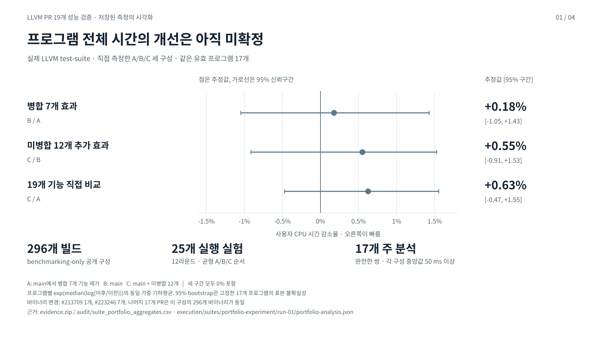
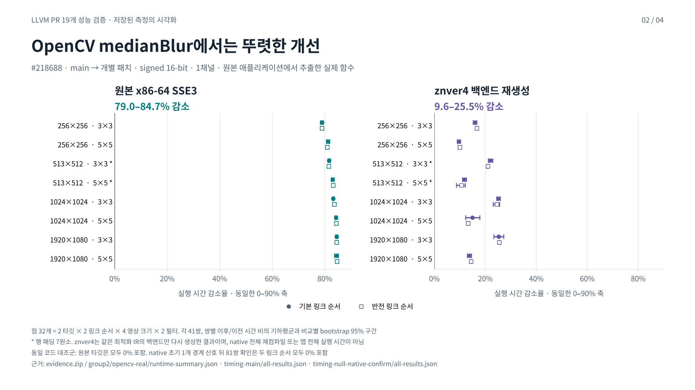
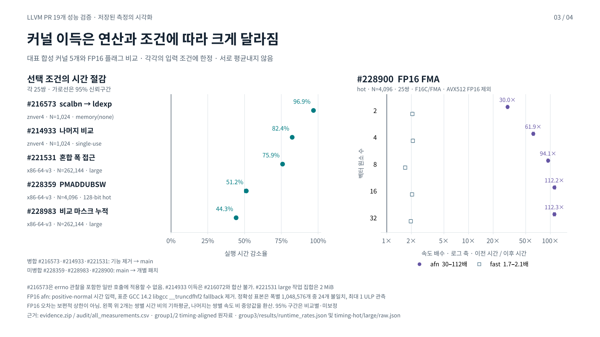
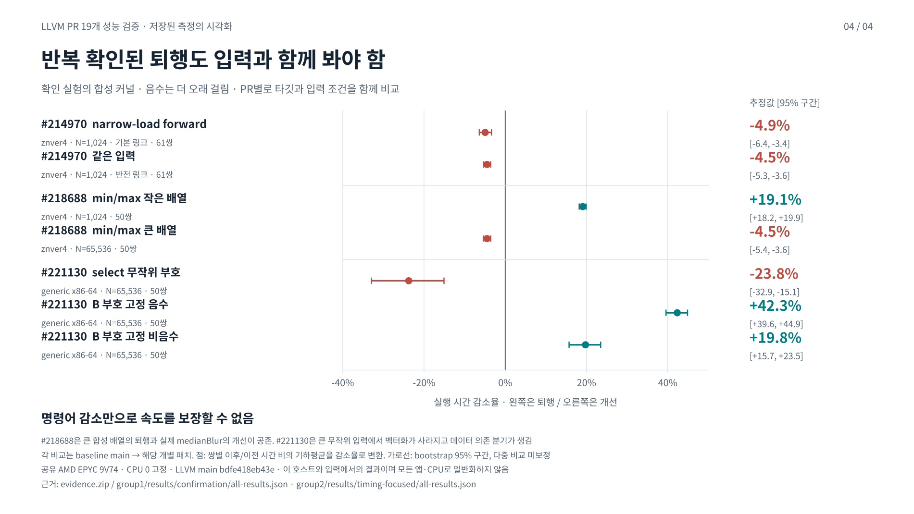

19개 PR 성능 검증 · 전체 보고서
실제 LLVM test-suite와 원본 함수, 타깃 커널을 독립적으로 측정한 기록입니다. 보고서 본문과 모든 표를 그대로 읽을 수 있습니다.
보고서가 언급한 405행 원시 CSV는 제공된 자료에서 확인되지 않았습니다. 이 페이지는 보고서에 있는 모든 문장·표와 차트 4장을 수록하며, 405개 상세 관측을 복원했다고 주장하지 않습니다.
전체 보고서 목차
보고서 원래 차트 4장




LLVM 최적화 PR 19개 성능 검증
실제 LLVM test suite와 원본 함수 및 타깃 커널의 독립 측정
2026년 10월 5일 UTC
핵심 결론
실제 LLVM test-suite의 선정된 17개 유효 프로그램에서 뚜렷한 평균 실행 시간 개선은 확인되지 않았다. 병합 7개 묶음, 미병합 12개의 추가 효과, 19개 기능의 직접 비교 모두 95% 구간에 변화 없음이 포함된다. 명목상의 1% 미만 차이를 입증된 개선으로 해석하지 않는다.
19개 PR의 가치는 특정 연산 패턴에서 확인되지만, 이를 일반 프로그램의 일괄적인 성능 향상률로 바꿀 수는 없다. 현재 main에 병합된 7개 PR은 해당 기능만 제거한 비교군과, 미병합 12개 PR은 동일 main에 각 패치를 적용한 비교군과 대조했다. 실제 LLVM test-suite, 원본 애플리케이션에서 추출한 함수, 합성 커널, 컴파일러 단계의 결과를 구분했다.
공개 LLVM test-suite의 benchmarking-only 구성 296개 프로그램을 19개 개별 PR 및 2개 묶음 비교로 모두 빌드했다. 개별 PR에서 실제 바이너리가 바뀐 것은 #213709의 Obsequi 1개와 #223246의 7개 프로그램이다. 다른 17개 PR의 바이너리는 이 구성에서 동일했다. 이는 이 시험 집합의 적용 범위를 설명하며, 다른 프로그램에서 효과가 없다는 뜻은 아니다.
실제 알고리즘의 가장 뚜렷한 실행 시간 개선은 #218688의 OpenCV medianBlur 추출 함수다. 원본 x86-64 SSE3 설정에서 79.0–84.7%, 같은 최적화된 본문을 znver4 백엔드로 다시 생성한 설정에서 9.6–25.5% 줄었다. signed 16-bit 영상의 3×3·5×5 필터 경로에 한정하며, 전체 OpenCV 앱이나 런타임 CPU 디스패치의 결과는 아니다.
반복 확인한 합성 커널의 성능 저하도 남아 있다. #214970은 작은 native 입력에서 4.5–4.9%, #221130은 큰 generic 무작위 입력에서 23.8%, #218688은 큰 native min/max 배열에서 4.5% 더 오래 걸렸다. 반대로 동일 PR도 다른 입력이나 실제 알고리즘에서는 개선될 수 있다.
#228900의 약 30–112배 결과는 afn으로 근사를 허용한 FP16 FMA 커널이 이 환경의 GCC 14 변환 보조 함수를 제거한 경우다. 시험한 데이터의 최대 오차는 1 ULP였지만 보편적인 1 ULP 한계는 입증하지 않았다. 이 수치를 일반 부동소수점 코드나 프로그램 전체의 기대치로 사용하면 안 된다.
근거 E1–E8 범위와 원자료의 위치는 마지막 절에 정리했다
비교 범위와 기준
모든 비교의 LLVM main은 bdfe418eb43eb473c72e9d8172a49c6fda494c02이며, LLVM test-suite는 e1356a24df892837fef6173c0e3561dd2c0518c1이다. 컴파일러는 Release LLVM 24.0.0 개발 스냅샷이다. PR 상태와 head는 이번 수집 시점에 고정했으며, 이후 GitHub 상태 변화는 반영하지 않는다.
병합 PR 비교는 과거 merge-parent 대비 실험이 아니다. 최신 main에서 좁은 기능 제거를 수행했고, #221531은 이후의 LLE 정확성 수정 #224833을 양쪽에 유지했다. #223246은 현재 소스 문맥에 맞게 패치를 적용했으며 의미 변경은 하지 않았다. 패치와 적용 방향, 원본 head 및 merge SHA는 부록의 기계 판독 자료에 남겼다.
포트폴리오 비교는 직접 측정한 A/B/C 결과만 사용한다. 개별 PR의 향상률을 합산하지 않는다. 특히 #214933과 #216072는 2×2 실험에서 어느 한쪽만 있어도 같은 standalone nonzero fold를 만들 수 있어, 둘의 이득을 독립적인 것으로 더할 수 없다.
| 비교 | 이전 | 이후 | 해석 |
|---|---|---|---|
| 개별 병합 PR 7개 | main에서 해당 기능만 제거 | 고정한 main | 현재 코드에서 해당 기능의 기여 |
| 개별 미병합 PR 12개 | 고정한 main | main에 해당 PR만 적용 | 현재 main에 추가했을 때의 변화 |
| 포트폴리오 A에서 B | 병합된 7개 기능 모두 제거 | 고정한 main | 병합 7개 묶음의 현재 기여 |
| 포트폴리오 B에서 C | 고정한 main | 미병합 12개 모두 적용 | 미병합 12개 묶음의 추가 효과 |
| 포트폴리오 A에서 C | 병합 7개 기능 모두 제거 | 미병합 12개 모두 적용 | 동일 시점의 19개 기능 반사실 비교 |
근거 E1 원본 head와 merge SHA 및 실제 적용 패치의 SHA256은 pr_provenance.json에 보존
실제 LLVM test suite 결과
시험 범위는 SingleSource와 MultiSource의 benchmarking-only 공개 구성, ref 입력, -O3 -march=x86-64-v3이다. benchmarking-only를 끈 전체 목록 2,139개 중 1,843개는 이 빌드·실행 범위에 포함하지 않았다. SPEC 등 비공개 시험이나 다른 ISA는 평가하지 않았다.
기준 빌드의 296개 프로그램에는 정확성 근거가 있다. 295개는 원래 VERIFY 절차를 통과했고, stock7zip 1개는 고정 소스의 CRC·디코드 오류 전파를 검토한 내부 self-check를 통과했다. 변경된 프로그램은 각 비교에서 다시 검증했다. 바이트가 동일한 프로그램은 같은 입력의 기준 검증을 상속한 경우가 있으므로, 이를 모두 별개의 재실행으로 세지 않았다.
#213709는 Obsequi의 .text를 16바이트 줄였다. #223246은 hexxagon, sqlite3, CLAMR, PENNANT, consumer-typeset, tramp3d-v4, bigfib의 명령어 본문을 바꾸며, 합계 .text는 236바이트 줄었다. 7개 프로그램의 변경은 빌드 경로나 ELF 메타데이터만의 차이가 아니다.
다만 #223246의 변경은 대체로 문자열 처리·초기화·출력이다. consumer-typeset의 변경은 선택되지 않은 PDF 백엔드이고, bigfib의 비교 제거는 인자 없는 시험 경로에서 건너뛴다. CLAMR은 PowerParser 함수이며 정상 시뮬레이션의 호출 경로를 확인하지 못했다. tramp3d는 초기 옵션 처리, hexxagon은 보드 출력, PENNANT는 초기화 및 시간 간격 진단 문자열, sqlite3는 타입·덤프·특수 값 서식 처리다. 바뀐 바이너리 개수가 곧 성능이 오른 hot path 개수는 아니다.
실행 시간 실험은 사전에 정한 core 18개와 묶음 비교에서 바뀐 추가 7개 프로그램을 합친 25개로 구성했다. 1회 워밍업 뒤 12라운드에서 A/B/C의 여섯 순열을 균형 있게 섞었다. 세 비교가 모두 완전하고 A/B/C 각각의 사용자 CPU 시간 중앙값이 50 ms 이상인 공통 17개만 주 분석에 포함했다. 따라서 평균의 분모는 296개가 아닌 17개다.
A는 현재 main에서 병합된 7개 기능을 제거한 상태, B는 현재 main, C는 B에 미병합 12개를 모두 적용한 상태다. 다음 표는 같은 17개 프로그램에 동일 가중치를 준 시간 비의 기하평균이다. C/A는 직접 측정한 비교이며 개별 PR 결과나 두 평균을 합산하지 않았다.
사용자 CPU 시간의 직접 비교
| 직접 비교 | 프로그램 수 | 시간 비 | 95% 구간 | 판단 |
|---|---|---|---|---|
| 병합 7개 B/A | 17 | 0.9982 | 0.9857 ~ 1.0105 | 변화 미확정 |
| 미병합 12개 C/B | 17 | 0.9945 | 0.9847 ~ 1.0091 | 변화 미확정 |
| 19개 직접 C/A | 17 | 0.9937 | 0.9845 ~ 1.0047 | 변화 미확정 |
프로그램별 직접 비교
| 프로그램 | B/A | C/B | C/A | 주 분석 |
|---|---|---|---|---|
| bullet | 0.9935 | 1.0263 | 1.0199 | 포함 |
| consumer-typeset | 0.9482 | 0.9568 | 0.9393 | 포함 |
| consumer-jpeg | 산출 안 함 | 산출 안 함 | 산출 안 함 | 제외 |
| Reductions-flt | 1.0022 | 1.0043 | 1.0180 | 포함 |
| oggenc | 1.0183 | 1.0151 | 1.0728 | 제외 |
| bigfib | 1.0285 | 0.9912 | 0.9566 | 포함 |
| security-rijndael | 0.9535 | 1.2692 | 1.0516 | 제외 |
| ControlFlow-flt | 1.0125 | 0.9969 | 1.0027 | 포함 |
| Obsequi | 0.9932 | 0.9863 | 0.9840 | 포함 |
| pairlocalalign | 1.0084 | 0.9844 | 1.0001 | 포함 |
| clamscan | 1.0434 | 0.9591 | 1.0628 | 포함 |
| lencod | 0.9849 | 1.0126 | 1.0025 | 포함 |
| ldecod | 0.8903 | 1.1104 | 0.9980 | 제외 |
| LinearDependence-flt | 1.0114 | 0.9897 | 0.9917 | 포함 |
| CLAMR | 0.9798 | 1.0066 | 0.9864 | 포함 |
| PENNANT | 1.0054 | 0.9780 | 0.9901 | 포함 |
| telecomm-fft | 1.0326 | 0.8693 | 0.9683 | 제외 |
| alacconvert-encode | 0.9929 | 0.9814 | 1.0261 | 제외 |
| tramp3d-v4 | 0.9844 | 1.0082 | 0.9822 | 포함 |
| alacconvert-decode | 0.9293 | 1.0134 | 1.0059 | 제외 |
| hexxagon | 0.9981 | 0.9779 | 0.9785 | 포함 |
| minisat | 0.9940 | 1.0118 | 0.9968 | 포함 |
| sqlite3 | 0.9903 | 1.0071 | 0.9914 | 포함 |
| lua | 0.9952 | 1.0122 | 0.9961 | 포함 |
| automotive-susan | 1.0620 | 0.9900 | 0.9968 | 제외 |
프로그램별 표의 비율도 이후/이전 사용자 CPU 시간이며 작을수록 빠르다. 제외된 초단시간 시험은 진단용으로만 남겼다. 75개 프로그램·비교 행의 전체 구간, 동일 바이너리 여부와 제외 사유는 llvm_suite_portfolio_all_programs.csv에 있다.
개별 시험은 쌍별 시간 비에 log를 취한 값의 중앙값을 다시 exp로 변환했다. 즉 exp(median(log(이후/이전)))이며, 12쌍에서 산술적인 비율 중앙값과 약간 다를 수 있다. 95% bootstrap 구간은 고정한 시험 집합의 표본 불확실성에 대한 것이며 전체 프로그램 모집단의 구간이 아니다. 개별 보조 검정에는 exact paired sign test와 Holm 보정을 사용했지만 표의 bootstrap 구간 자체는 보정하지 않았다. 변경되지 않은 동일 코드의 시간 차이는 컴파일러 최적화 효과로 귀속하지 않았다.
7개 프로그램은 사용자 CPU 시간이 50 ms 미만이라 제외했다. consumer-jpeg는 약 2 ms이며 측정 중 7개 user-time이 0으로 기록되어 유효 쌍이 부족했다. 이 프로그램의 워밍업 포함 A/B/C 39회는 모두 return 0과 lit PASS였고 VERIFY 실패는 없었다. 타이머 해상도 문제를 정확성 실패로 세지 않았다. 변경 프로그램의 독립 확인 실험은 별도로 정리한다.
변경 프로그램의 개별 PR 확인
바이너리가 바뀐 8개 프로그램은 각 PR을 단독으로 비교해 12쌍씩 다시 측정했다. #213709의 Obsequi는 1.0006 [0.9869, 1.0335]였다. #223246의 7개도 다중 비교와 동일 코드 대조군을 고려하면 확인된 실행 시간 변화가 없다. PENNANT와 consumer-typeset의 보정하지 않은 bootstrap 구간은 1 미만이지만 Holm 보정 sign test는 통과하지 않았고, consumer-typeset의 변경은 선택되지 않은 PDF 경로다. 따라서 이를 확정된 개선 목록으로 만들지 않았다.
| PR와 프로그램 | 시간 비 | 95% 구간 | 최종 판단 |
|---|---|---|---|
| 213709 Obsequi | 1.0006 | 0.9869 ~ 1.0335 | 변화 미확정 |
| 223246 sqlite3 | 1.0046 | 0.9842 ~ 1.0090 | 변화 미확정 |
| 223246 tramp3d-v4 | 1.0263 | 0.9723 ~ 1.0572 | 변화 미확정 |
| 223246 PENNANT | 0.9742 | 0.9465 ~ 0.9927 | 변화 미확정 |
| 223246 consumer-typeset | 0.9701 | 0.9386 ~ 0.9899 | 변화 미확정 |
| 223246 hexxagon | 1.0032 | 0.9772 ~ 1.0211 | 변화 미확정 |
| 223246 CLAMR | 1.0003 | 0.9735 ~ 1.0218 | 변화 미확정 |
| 223246 bigfib | 0.9559 | 0.8850 ~ 1.0945 | 변화 미확정 |
동일 바이너리 대조군도 결과 자료에 유지했다. #213709 비교의 Reductions-flt 대조군은 약 1.2% 느린 점추정과 1을 근소하게 벗어나는 bootstrap 구간을 보였지만, Holm 보정 검정을 통과하지 못했다. 이러한 흔들림을 PR 효과로 귀속하지 않는다.
근거 E2 296개 정적 비교와 25개 선정 실행 시간 집합은 서로 다른 분모
실제 소스에서 추출한 함수
원본 함수 추출 실험은 애플리케이션의 최적화된 명령어 본문을 유지하면서 외부 진입점 이름·링크·정렬과 필요한 지원 코드를 맞췄다. 입력은 통제된 데이터이며 프로덕션 트레이스가 아니다. 따라서 실행된 알고리즘에 대한 근거는 강화하지만, 앱 전체의 시간 비중이나 최종 사용자 체감 속도를 측정하지는 않는다.
#218688 OpenCV medianBlur는 원본의 cv::cpu_baseline::medianBlur 본문을 유지했다. Mat 헤더의 제한된 얕은 복사와 비활성 tracing 지원을 제공하고, 시험 범위 밖 경로는 실패하도록 만들었다. LTO로 지원 코드를 합치지 않았다. 각 구현은 480개 영상 사례와 2,862,848개 스칼라 출력을 독립 nth_element 참조와 비교했다. 1·3·4 채널, 얇고 홀수인 영상, 패딩, 극단값과 복제 경계를 포함했다. 시간 측정은 1채널의 비소형 영상 4종, 두 필터, 두 링크 순서, 두 타깃 해석에서 수행했다.
원본 x86-64 SSE3의 16개 설정은 시간 비 0.153–0.210, 별도 znver4 백엔드 재생성의 16개 설정은 0.745–0.904였다. 모든 효과 구간의 상한이 1 미만이다. znver4는 같은 최적화된 IR 본문을 백엔드만 다시 생성한 실험이며, native frontend·middle-end 전체 재컴파일은 아니다. 원본 타깃의 동일 코드 대조군은 모두 1을 포함했다. 최초 native 대조군 하나가 경계 밖이었으나 독립적인 81쌍 반복은 두 링크 순서 모두 1을 포함했다. 원자료는 모두 유지했다.
#213709의 실제 Hyperscan/Boost bitset-find helper는 분포당 13,833개 정확성 사례를 통과했으나, mixed·odd·even·sparse 네 분포의 실행 시간 구간이 모두 1을 포함했다. 원본 Hyperscan 모듈의 5개 함수가 바뀌고 .text가 48바이트 늘었다는 정적 결과와 실행 시간 개선 여부는 별개다.
#214933의 실제 OpenCV base64_encode는 4,097개 길이와 offset·null 시험을 통과했지만, 측정한 7개 길이에서 시간 변화가 분명하지 않았다. 나눗셈이 밀집된 합성 커널의 큰 이득이 이 실제 함수의 속도 향상으로 그대로 이어지지는 않았다.
Darktable·DuckDB·Node·Linux·PostgreSQL·OIIO 등의 원본 IR 재생에서는 변환과 일부 코드 크기 변화를 확인했다. 이들은 다운로드한 코퍼스 스냅샷이며 원래 애플리케이션 소스 리비전과 frontend 명령을 모두 확정하지 못했다. Darktable 앱 전체 실행이나 DuckDB·OIIO의 앱 시간 측정은 수행하지 않았다.
| 실제 함수 | 타깃과 범위 | 실행 시간 결과 |
|---|---|---|
| OpenCV medianBlur | 원본 x86-64 SSE3 16개 설정 | 79.0–84.7% 감소 |
| OpenCV medianBlur | znver4 백엔드 재생성 16개 설정 | 9.6–25.5% 감소 |
| Hyperscan Boost helper | 네 입력 분포 | 모든 구간에 변화 없음 포함 |
| OpenCV base64_encode | 일곱 입력 길이 | 모든 구간에 변화 없음 포함 |
근거 E3 E4 OpenCV의 32개 효과 설정과 초기 대조군 4개 및 추가 대조군 2개를 모두 보존
19개 PR별 판단
범용 x86-64와 native znver4는 타깃 커널의 서로 다른 코드 생성 설정이다. 그룹 3의 x86-64-v3 및 일부 x86-64-v4 설정은 별도로 명시한다. 아래 대괄호 구간은 달리 적지 않으면 비교별 bootstrap 95% 구간이며 다중 비교 보정은 하지 않았다.
PR 212112 상수 부분 축약 PR 보기 ↗
병합 · X86; 실행 시간 주장 없음
256개 상수 reduction의 IR 단순화를 재현했다. 해당 X86 기계어는 양쪽 동일하고 실행 .text도 2,048바이트로 같아, 이 입력의 런타임 개선을 주장하지 않는다.
별도 합성 컴파일 입력에서는 InstCombine 시간이 15.3% 증가했지만 opt O3 시간은 16.7% 줄었다. 초기 단계 비용과 후속 단계 절감은 구분해야 한다.
suite 296개 바이너리는 모두 동일하다. 이 결과는 상수 계산의 정확한 사전 평가와 특정 최적화 단계 비용에 관한 근거다.
PR 213690 NaN fallback clamp PR 보기 ↗
미병합 · generic x86-64 및 native znver4
generic 합성 커널의 시간 비는 0.594–0.708로 약 29–41% 줄었다. native는 작은 finite·1% NaN 입력에서 개선되지만 50% NaN과 큰 배열에서는 대체로 구간이 1을 포함한다.
원본 Darktable dither 모듈에서 minnum/maxnum 쌍 29개가 생기고 .text는 11,181→10,845바이트다. 실제 모듈의 opt O3 벽시계 시간은 2.30%, 후속 llc는 3.18% 줄었으며 opt 차이는 0에 가까운 탐색적 결과다.
suite 바이너리는 모두 동일하다. Darktable 전체 실행 시간, 다른 ISA, 더 넓은 입력 분포의 성능은 확정하지 않았다.
PR 213709 최하위 비트 비교 PR 보기 ↗
병합 · generic x86-64 및 native znver4
generic 합성 시간 비는 0.374–0.528, native 1,024원소는 0.646–0.824다. native 65,536원소의 구간은 1을 포함한다.
실제 Hyperscan/Boost helper의 네 분포에서도 구간이 모두 1을 포함한다. 원본 모듈에서 직접 lowbit 비교 10개를 제거하고 5개 함수가 바뀌었지만 .text는 48바이트 늘었다.
suite에서는 Obsequi 1개가 바뀌며 .text는 16바이트 감소했다. 별도 12쌍 확인의 사용자 CPU 시간 비는 1.0006 [0.9869, 1.0335]로 실행 시간 변화가 미확정이다.
PR 213954 부호 마스크 shift PR 보기 ↗
미병합 · generic x86-64 및 native znver4
1,024원소 합성 배열의 generic 시간 비는 0.841 [0.823, 0.860], native는 0.937 [0.907, 0.967]이다. 각각 약 15.9%, 6.3% 덜 걸렸다.
65,536원소에서는 두 타깃 모두 구간이 1을 포함한다. scalar·fixed·scalable vector 회귀 사례와 합성 IR·기계어 변환은 재현했다.
suite 바이너리는 모두 동일하며 실제 애플리케이션 출처나 전체 앱 실행 시간 근거는 확보하지 않았다.
PR 214108 포화 뺄셈 비교 PR 보기 ↗
병합 · generic x86-64 및 native znver4
generic single-use 합성 시간 비는 약 0.340–0.395, 작은 native 배열은 0.663–0.720이다. 계산 결과를 여러 곳에서 쓰는 multi-use 사례의 효과는 훨씬 작다.
최초 native 큰 배열에서 약 2.4% 저하가 관측됐으나 61쌍 반복의 정상·반전 링크 순서에서 각각 0.998 [0.988, 1.008], 1.000 [0.986, 1.012]였다. 반복되지 않은 초기 신호를 확정된 퇴행으로 세지 않는다.
원본 DuckDB와 Node 함수의 코드 변화는 확인했다. suite 바이너리는 모두 동일하며 앱 실행 시간은 측정하지 않았다.
PR 214933 나머지와 피제수 비교 PR 보기 ↗
병합 · generic x86-64 및 native znver4
가변 제수의 single-use 합성 커널에서 나눗셈을 제거해 generic 시간 비 약 0.234–0.242, native 약 0.176–0.496을 얻었다. 이는 의도적으로 나눗셈이 밀집된 입력이다.
실제 OpenCV base64 함수는 측정한 7개 길이 모두 구간이 1을 포함했다. 원본 OpenCV·Linux·PostgreSQL의 코드 변화는 재현했고 PostgreSQL .text는 16바이트 감소했다.
suite 바이너리는 모두 동일하다. #216072와 최적화가 겹치므로 두 PR의 이득을 더할 수 없다.
PR 214970 zext를 통한 재결합 PR 보기 ↗
미병합 · generic x86-64 및 native znver4
실제로 변환을 유발하는 narrow-load 합성 커널의 generic 시간 비는 0.730–0.921이다. 처음 만든 wide-load 입력은 기계어가 같아 대조군으로 유지했다.
native forward 1,024원소는 정상 링크에서 4.94% [3.38%, 6.39%], 반전 링크에서 4.47% [3.58%, 5.31%] 더 오래 걸렸다. 큰 forward 입력은 일부 개선되고 reverse 입력은 미확정이다.
suite 바이너리는 모두 동일하다. 명령어 수 감소만으로 속도 향상을 보장할 수 없으며, 확인된 저하는 이 입력·호스트의 타깃 결과다.
PR 215073 16진수 자릿수 계산 PR 보기 ↗
미병합 · generic x86-64 및 native znver4
0을 별도로 처리하는 hexadecimal digit-count 합성 입력에서 generic 시간 비는 약 0.77–0.81로 19–23% 줄었다.
native znver4는 코드가 줄어도 뚜렷한 런타임 개선을 확인하지 못했다. 작은 입력은 잡음도 크다.
suite 바이너리는 모두 동일하다. 과거 Velox·PHP 코퍼스 보고는 현재 구현보다 오래된 패치이므로 현재 PR의 성능 근거로 사용하지 않았다.
PR 216072 nonzero 나머지 추론 PR 보기 ↗
병합 · generic x86-64 및 native znver4
clamp 합성 커널은 generic에서 개선되고, 큰 native 입력의 시간 비는 0.941 [0.928, 0.959]이다.
standalone nonzero 비교는 #214933이 있는 기준 main에서 이미 fold된다. 2×2 비교에서 어느 한 PR만 있어도 fold되고 둘을 모두 제거해야 remainder·comparison이 남았다.
suite 바이너리는 모두 동일하다. 실제 DuckDB .text −16바이트와 OIIO +48바이트는 정적 결과이며 앱 시간 측정은 아니다.
PR 216573 scalbn에서 ldexp로 변환 PR 보기 ↗
병합 · generic x86-64 및 native znver4
명시적인 memory(none) 합성 호출에서는 native가 AVX-512 vscalef와 벡터화를 사용해 약 95–97% 덜 걸렸다. generic은 같은 libm 구현의 별칭 호출이 남아 통상 약 3–6% 감소였다.
지수가 상수 0인 별도 입력은 호출이 사라지고 복사 코드가 된다. 그 결과를 일반 scalbn 호출의 효과로 섞지 않았다.
suite 바이너리는 모두 동일하다. errno를 관찰하는 호출이나 일반 앱에 같은 전제를 적용할 수 없으며 명시적인 메모리·호출 의미가 핵심이다.
PR 218688 signed min max 폭 축소 PR 보기 ↗
미병합 · generic x86-64 및 native znver4; 실제 함수 SSE3
generic 합성 커널은 크게 개선했다. native 반복에서 작은 배열은 19.09% [18.20%, 19.92%] 덜 걸렸지만 큰 배열은 4.48% [3.57%, 5.39%] 더 걸렸다.
원본 OpenCV medianBlur 추출 알고리즘은 SSE3에서 약 79–85%, 별도 znver4 백엔드 재생성에서 약 10–26% 덜 걸렸다. 실제 모듈의 .text는 11.82% 감소했고 llc 비용은 11.77% 감소했으나 opt O3 비용 변화는 미확정이다.
suite 바이너리는 모두 동일하다. 실제 알고리즘 결과가 합성 퇴행을 지우지는 않으며, 합성 퇴행도 median 개선을 반박하지 않는다. 입력과 타깃별 범위를 유지해야 한다.
PR 219824 부호 마스크 funnel shift PR 보기 ↗
미병합 · generic x86-64 및 native znver4
generic 합성 배열은 작은 입력 약 39.3%, 큰 입력 약 21.3% 덜 걸렸다.
native는 정적 명령어가 줄어도 시간 구간이 1을 포함한다. 독립적인 유한 비트폭 대수 검사는 정확성 근거로 별도 유지했다.
suite 바이너리는 모두 동일하다. 명령어 수나 대수 등가 검사를 실제 애플리케이션의 성능 측정으로 취급하지 않는다.
PR 221130 연관 select 단순화 PR 보기 ↗
미병합 · generic x86-64 및 native znver4
generic 큰 무작위 입력의 확인 실험은 23.76% [15.07%, 32.95%] 더 걸렸다. 기계어에서는 벡터화가 사라지고 데이터 의존 분기가 생긴다.
B 부호가 예측 가능하면 시간 비 0.577·0.802로 개선되고 작은 무작위 배열도 개선한다. native 결과는 미확정이다. 가장 크고 잡음이 심했던 최초 저하 수치보다 확인 반복을 대표값으로 사용했다.
suite 바이너리는 모두 동일하다. 실제 데이터의 분기 예측 가능성이 중요한 PR이며, 개선 사례만으로 일반화하지 않는다.
PR 221523 fract 형태의 정수 판정 PR 보기 ↗
미병합 · generic x86-64 및 native znver4
native 큰 배열은 시험한 분포 전반에서 약 16% 덜 걸렸다. 작은 native 입력도 개선하지만 변동이 더 크다. generic의 변화는 더 작고 일부 설정은 미확정이다.
fast-math 없이 특수 값 시험을 통과했다. 정확성 회귀와 시험한 입력의 검증을 실행 시간 측정과 함께 보존했다.
suite 바이너리는 모두 동일하다. 작성자가 보고한 2³² 전수 검증은 독립적으로 재실행하지 않았으므로 자체 전수 검증으로 주장하지 않는다.
PR 221531 혼합 폭 접근 의존성 PR 보기 ↗
병합 · x86-64-v3 합성 커널
캐시에 가까운 hot 입력의 속도 비는 0.988 [0.956, 1.004]로 이득이 미확정이다. 큰 무작위 업데이트 입력은 4.144배 [4.083, 4.174]로 약 75.9% 덜 걸렸다.
양쪽 비교군 모두 이후 LLE 정확성 수정 #224833을 유지했다. 잘못된 코드를 빠른 기준으로 삼지 않도록 현재 main에서 해당 LAA 기능만 제거했다.
suite 바이너리는 모두 동일하다. 큰 입력은 2 MiB 작업 집합이며 DRAM 병목을 입증한 실험이나 애플리케이션 시간은 아니다.
PR 223246 상수 select와 phi의 문자열 길이 PR 보기 ↗
미병합 · x86-64-v3 합성 커널 및 실제 suite
선택한 nested strlen·wcslen·PHI 커널은 약 1.49–2.12배 빨라졌다. 동적 포인터와 2-way 대조군의 코드는 동일하다.
suite 7개 프로그램에서 19개 고유 함수 본문이 바뀌지만 대부분 초기화·파싱·출력 또는 선택되지 않은 경로다. 합성 InstCombine은 5.31% 느려지고 opt O3는 9.45% 빨라졌다. 최적화 매칭이 실패한 동적 입력의 InstCombine 비용도 7.25% 늘었다.
개별 PR의 suite 7개 확인 실험도 다중 비교·동일 코드 대조군을 고려하면 실행 시간 변화가 미확정이다. 작성자의 Apple M1 수치는 별도 외부 근거이며 이 EPYC 측정과 평균내지 않는다.
PR 228359 PMADDUBSW 결합 PR 보기 ↗
미병합 · x86-64-v3; 512비트 설정은 x86-64-v4
안전 조건과 교환형 hot 커널은 약 1.72–2.05배 빨라졌다. 큰 작업 집합의 128비트 사례는 약 20–21% 덜 걸리지만 256·512비트의 효과는 작고 가변적이다.
512비트 safe 사례의 확인 반복 구간은 효과 없음도 포함한다. 바이트가 같은 PMADD 대조군에서도 약 1.2% 시간 편향이 남아 있어 수 퍼센트의 작은 효과에는 특히 주의해야 한다.
suite 바이너리는 모두 동일하다. 정적 명령어·llvm-mca 처리량과 실제 실행 측정은 구분했고, 개별 출력 단위도 2개 곱의 i16 결과로 명시했다.
PR 228900 근사 FP16 FMA 승격 PR 보기 ↗
미병합 · F16C와 FMA; AVX512 FP16 제외
afn hot 커널은 약 30–112배 빨라졌다. before는 자체적으로 느리게 만든 기준이 아니라 Debian GCC 14.2.0 libgcc의 __truncdfhf2를 링크한 표준 fallback이다. 양쪽의 원소 수·반복 수와 연산량을 맞췄다.
각 시험 폭의 정확성 데이터 1,048,576개에서 24개 불일치, 관측 최대 1 ULP였고 기록된 NaN-class·signed-zero 차이는 없었다. 무한대 분류의 별도 카운터는 없고 보편적 오차 한계도 입증하지 않았다. exact·contract 및 기능 제외 경로는 동일 코드다.
suite 바이너리는 모두 동일하다. 약 30–112배는 제한된 positive-normal 시간 입력·근사 허용·runtime 공급자·타깃 조합의 결과다. 별도 fast 플래그 커널은 약 1.7–2.1배이며 afn 수치와 섞지 않는다.
PR 228983 동등 비교 마스크 누적 PR 보기 ↗
미병합 · x86-64-v3 합성 커널
선택한 equality-mask 누적 패턴은 hot에서 1.772배 [1.746, 1.794], 큰 작업 집합에서 1.795배 [1.778, 1.819]였다. 이는 실행 시간 약 43.6–44.3% 감소에 해당한다.
defined-input 정확성·IR·기계어 변환을 검증했다. 비교 단위는 배열 원소이며 두 측정 크기를 독립적인 애플리케이션 수로 세지 않았다.
suite 바이너리는 모두 동일하다. 실제 앱 또는 포트폴리오 전체의 1.8배 향상이라는 뜻은 아니다.
근거 E1 E3 E4 E5 E6 E7 모든 타깃 설정과 반복 및 대조군은 전체 측정 CSV에 포함
컴파일러 단계 비용
컴파일 비용은 생성된 프로그램의 실행 시간과 별개다. 합성 반복 입력의 13개 opt·llc 지표와 실제 코퍼스 전체 모듈의 8개 지표를 독립적으로 측정했다. frontend와 링크를 포함한 clang 전체 빌드 시간은 측정하지 않았다. opt와 llc의 별도 중앙값을 더해 전체 컴파일 시간으로 만들지 않는다. 아래 표와 이 절의 대표 수치는 프로세스 벽시계 시간이며, 사용자 CPU 시간과 구분한다.
합성 입력은 3회 워밍업 뒤 21쌍, 실제 모듈은 3회 워밍업 뒤 31쌍을 측정했다. 합성 입력에서 #212112·#218688·#223246은 InstCombine 비용이 늘면서도 전체 opt O3 비용은 줄었다. 추가적인 초기 fold 작업이 후속 작업을 줄이는 설명과 일치하지만 원인을 단계별로 분해해 입증한 것은 아니다.
실제 Darktable dither에서 #213690의 opt O3는 2.30% [0.18%, 3.79%] 덜 걸렸고, llc는 3.18% [1.92%, 3.89%] 덜 걸렸다. opt 차이는 0에 가까우며 다중 비교를 보정하지 않았다. 실제 OpenCV medianblur에서 #218688의 opt O3는 −0.51% [−1.74%, +0.72%]로 미확정, llc는 11.77% [10.38%, 13.60%] 감소다. Linux ebitmap 대조군은 두 PR·두 단계 모두 벽시계 시간의 구간이 0을 포함한다. Darktable llc의 사용자 CPU 시간은 −0.42% [−3.48%, +0.95%]로 미확정이므로, 작은 벽시계 개선이 두 지표에서 모두 확인된 결과는 아니다. OpenCV llc는 사용자 CPU 시간도 약 11.55% 감소했다.
실제 모듈의 원본 타깃 속성을 유지했고 복제·추출·합성 확대를 하지 않았다. llc에는 각 비교군이 사전 생성한 자체 O3 bitcode를 넣었으므로, 변경된 IR 작업량과 컴파일러 라이브러리의 차이를 함께 포함한다. 동일 IR에 대한 순수 백엔드 비용 분리 실험은 아니다. 프로세스 시작·동적 로딩 비용은 포함하며 빼지 않았다.
실제 모듈의 여덟 지표
| PR | 실제 모듈 | 단계 | 벽시계 ms | 쌍별 변화 | 95% 구간 |
|---|---|---|---|---|---|
| 213690 | Darktable dither | opt-O3 | 163.2 → 159.2 | −2.30% | −3.79% ~ −0.18% |
| 213690 | Darktable dither | llc | 72.6 → 70.5 | −3.18% | −3.89% ~ −1.92% |
| 213690 | Linux ebitmap 대조군 | opt-O3 | 59.4 → 59.3 | +1.75% | −0.30% ~ +2.66% |
| 213690 | Linux ebitmap 대조군 | llc | 44.1 → 43.9 | −0.14% | −1.41% ~ +1.64% |
| 218688 | OpenCV medianblur | opt-O3 | 1288.7 → 1273.5 | −0.51% | −1.74% ~ +0.72% |
| 218688 | OpenCV medianblur | llc | 717.1 → 636.8 | −11.77% | −13.60% ~ −10.38% |
| 218688 | Linux ebitmap 대조군 | opt-O3 | 58.8 → 59.2 | +1.53% | −0.12% ~ +2.74% |
| 218688 | Linux ebitmap 대조군 | llc | 43.0 → 43.0 | −0.75% | −3.09% ~ +2.01% |
이전·이후 열은 각각의 중앙값이다. 그 나눗셈과 쌍별 추정값은 같지 않을 수 있다. llc는 각 비교군의 고유 O3 출력에 대한 비용이다.
합성 입력의 열세 지표
| PR | 입력과 단계 | 복제 수 | 벽시계 변화 | 95% 구간 |
|---|---|---|---|---|
| 212112 | partial-instcombine | 8192 | +15.25% | +6.45% ~ +21.28% |
| 212112 | partial-O3 | 8192 | −16.75% | −19.76% ~ −14.02% |
| 212112 | control-O3 | 2048 | −0.66% | −1.48% ~ +1.34% |
| 218688 | minmax-instcombine | 4096 | +24.81% | +23.39% ~ +28.54% |
| 218688 | minmax-O3 | 4096 | −9.15% | −10.96% ~ −3.47% |
| 218688 | control-O3 | 2048 | −1.30% | −3.41% ~ −0.02% |
| 223246 | recursive-instcombine | 4096 | +5.31% | +2.52% ~ +7.83% |
| 223246 | recursive-O3 | 1024 | −9.45% | −12.88% ~ −6.60% |
| 223246 | control-O3 | 2048 | +0.47% | −2.09% ~ +1.76% |
| 218688 | minmax_accept64-instcombine | 512 | +0.86% | −1.76% ~ +1.99% |
| 218688 | minmax_reject64-instcombine | 512 | −0.09% | −0.59% ~ +1.84% |
| 223246 | dynamic-instcombine | 4096 | +7.25% | +3.23% ~ +9.58% |
| 228900 | fma-llc | 512 | −72.54% | −73.01% ~ −72.20% |
depth 64인 #218688 입력은 두 컴파일러가 이미 모두 폭을 줄였으므로 새로 가능해진 깊은 fold의 증거가 아니다. #218688 no-match O3 대조군의 작은 −1.30% 효과는 벽시계 구간만 근소하게 0을 벗어나고 user time은 포함한다. 전체 프로그램의 개선으로 해석하지 않는다.
근거 E6 E7 모든 13개 합성 지표와 8개 실제 모듈 지표를 유리한 결과만 고르지 않고 포함
측정 방법과 불확실성
호스트는 AMD EPYC 9V74 기반 Linux x86-64 공유 환경이다. 허용된 CPU 0에 고정하고 협조적인 빌드·다른 벤치마크를 중단한 구간에서 측정했다. 다른 사용자 부하, 주파수, 열 상태, VM steal까지 통제하지는 못했다. turbo·ASLR·보안 설정은 바꾸지 않았다. 따라서 구간은 이 실행의 쌍별 표본 불확실성이지 모든 CPU·레이아웃·미래 리비전에 대한 보장은 아니다.
타깃 커널은 워밍업·자동 반복 횟수 조정 뒤 기본 25쌍을 AB/BA 순서로 섞었다. 그룹 1·2는 대체로 짧은 쪽 15 ms, 퇴행 확인은 50 ms 수준이다. 그룹 1은 확인 61쌍, 그룹 2는 50쌍을 사용했다. OpenCV 실제 함수는 41쌍·50 ms이며 추가 native 대조군은 81쌍·100 ms다. 그룹 3은 같은 프로세스·동일 버퍼에서 측정하고 별도 장시간 반복을 저장했다.
그룹 1·2의 대표값은 쌍별 이후/이전 시간 비의 기하평균이다. 그룹 3은 쌍별 이전/이후 속도 비의 중앙값을 원래 보고한다. 본문에서 시간 변화로 바꿀 때는 역수를 취하고 신뢰구간 양 끝의 순서를 뒤집었다. 컴파일 비용은 쌍별 시간 비의 중앙값이다. 독립적인 before·after 중앙값의 나눗셈은 쌍별 추정량과 다를 수 있다.
시간 비 R이 이후/이전이면 시간 변화는 100×(R−1)%이며, 빨라진 배수는 1/R이다. 1.795배는 시간이 약 44.3% 줄었다는 뜻이고 79.5% 줄었다는 뜻은 아니다. 합성 커널의 벽시계 시간과 suite lit의 exec_time을 섞지 않는다. 고정 suite의 exec_time은 RUN 명령들의 사용자 CPU 시간 합계이며 바깥 lit 프로세스의 벽시계 시간은 측정 프로그램 시간이 아니다.
타깃 및 컴파일 결과의 bootstrap 95% 구간은 비교별 탐색적 구간이다. 그룹 1·2·3 기본 설정 79·72·78개를 동시에 검정한 가족 단위 보장은 없고 다중 비교 보정도 하지 않았다. 좋아 보인 설정만 평균내지 않았으며 모든 실패·퇴행·미확정·대조군을 자료에 남겼다. 서로 다른 패턴의 합성 결과를 하나의 기하평균으로 합치지 않았다.
그룹 1의 최초 배치는 calloc 출력 주소 정렬이 달라 생긴 교란 때문에 성능 근거에서 전부 제외했다. 최종 결과는 64바이트 정렬 입력·출력·함수와 동일 출력 주소를 사용하고 링크 순서 반전·동일 함수 검사를 추가했다. 유효 기본 대조군 8개와 확인 대조군 4개의 구간은 모두 1을 포함했다. 그룹 2의 기본·확인·별도 진단 대조군도 모두 포함했다.
그룹 3의 동일 object 대조군 36개 중 최초 2개가 1을 근소하게 벗어났다. FMA exact 장시간 반복은 효과 없음을 포함했으나 PMADD 대조군에는 약 1.2% 편향이 남았다. 이를 실제 최적화 퇴행으로 해석하지 않았고, 작은 효과를 읽을 때 측정 바닥으로 명시했다.
표준 runtime을 고의로 느리게 바꾸지 않았다. FP16 fallback의 libgcc archive와 object SHA256 및 링크된 심벌을 확인했다. 초기 272개 설정의 모든 점추정량을 원자료에서 재계산했고, 확인 반복·그룹 3·컴파일 구간도 재생성했다. 기본 검사 1,162개와 추가 구간 검사는 실패가 없었다. 최종 보충 감사는 추가 검사 5,349개를 통과했다.
그룹 1·2는 측정 시점에 기록된 실행 파일 해시와 보존된 실행 파일을 대조했다. 그룹 3은 원시 시간 자료에 당시 실행 파일 해시가 없으므로, 감사 시점의 해시를 별도 표기했다. 사후 해시를 측정 당시의 해시인 것처럼 제시하지 않았다.
최종 정규화 자료는 405행이다. 초기 런타임 259개와 합성 컴파일 13개에 OpenCV 실제 함수 38개, 실제 모듈 컴파일 8개, suite 개별 확인 12개, 포트폴리오의 프로그램별 세 대비 75개를 추가했다. 수치 비율이 있는 행은 402개이며 consumer-jpeg의 세 대비는 비워 두었다. 이는 독립적인 프로그램 405개라는 뜻이 아니다. A/B/C의 같은 관측에서 파생한 세 대비와 대조군·반복을 포함하며, 포트폴리오 평균 3개는 별도다.
근거 E3–E8 최종 정규화 405행 중 402행에 수치 비율이 있으며, 별도 포트폴리오 평균 3개는 독립적으로 제공
결과를 적용할 때의 판단
실제 프로그램에 적용할 기대치는 변환 빈도와 실행 경로의 시간 비중에 좌우된다. 이 suite에서 다수 PR의 바이너리가 동일한 반면, OpenCV처럼 해당 패턴이 반복되는 실제 알고리즘에서는 큰 변화가 나타났다. 지금 확보한 근거만으로 임의의 대규모 앱에 공통 성능 향상률을 약속할 수는 없다.
미병합 PR 검토에서는 #214970·#221130의 재현된 퇴행 입력을 유지하고, #218688은 실제 median의 이득과 큰 합성 배열의 퇴행을 함께 평가하는 것이 적절하다. #228900은 afn 의미와 오차 계약·runtime 공급자를 명시한 대상 코드에서 판단해야 한다. 병합 PR은 이미 main에 들어 있어 최신 main 사용자에게 다시 추가되는 이득이 아니다.
추가 판단이 필요하다면 실제 사용자의 프로그램과 데이터에서 동일 플래그로 재컴파일하고, 변환이 실행되는지 확인한 뒤 전체 시간의 before/after를 직접 측정해야 한다. 현재 결과는 그 대상을 고르는 근거이며, 범위 밖에 대한 숫자 추정 대신 확인한 변화와 미확정을 함께 제공한다.
재현 방법과 증거 자료
증거 묶음의 상대 경로를 기준으로 아래 자료를 연결했다. 실행 파일과 전체 빌드 트리는 크기 때문에 포함하지 않지만, 고정된 소스 리비전, production 패치, 컴파일러·입력·실행 파일의 해시, 실행 명령, 모든 원시 표본과 분석 코드를 보존했다. 원본 파일 해시와 경로 정규화 뒤 파일 해시는 패키지 목록에서 구분한다.
1. 고정한 LLVM 및 test-suite SHA를 체크아웃한다. 각 PR의 production 패치를 기록된 정방향·역방향 또는 좁은 기능 제거 방식으로 적용한다. 병합 7개와 미병합 12개 조합도 별도의 소스·라이브러리 스냅샷을 사용한다.
2. execution/variants의 manifest와 variant-plan을 따라 Release 컴파일러를 준비한다. 실행용 wrapper는 해당 variant의 libLLVM 및 공통 고정 libclang-cpp만 불러오게 하며, 실제 로딩 경로와 SHA256을 검증한다.
3. suite는 baseline-core/manifest의 CMake 설정과 -O3 -march=x86-64-v3를 유지한다. 원래 VERIFY·입력·출력 허용 오차를 보존하고, 변환되는 IR·기계어 및 correctness를 먼저 확인한다.
4. 타깃 커널은 해당 harness와 저장된 command를 사용한다. 버퍼·함수 정렬, 동일 출력 주소, 동일 연산 횟수, float 의미, runtime 공급자를 맞춘다. 실제 OpenCV 지원 계약의 범위를 벗어나는 입력을 섞지 않는다.
5. 빌드와 다른 측정을 중단하고 CPU affinity·워밍업·무작위 쌍 순서·반복 수를 같은 프로토콜로 적용한다. 같은 코드를 비교하는 대조군과 링크 순서 반복을 포함하고 모든 표본을 저장한다.
6. CSV의 원래 추정량과 단위를 유지해 분석한다. suite 적격 집합과 제외 사유를 먼저 확정하고, 합성 커널·실제 함수·컴파일 시간은 별도 집합으로 남긴다. 원래 raw JSON과 검증 스크립트로 점추정값·구간을 재계산할 수 있다.
| 근거 | 내용 | 패키지 상대 경로 |
|---|---|---|
| E1 | 리비전과 적용 방향 | deliverables/pr_provenance.json execution/variant-plan.json |
| E2 | suite 범위와 개별 변경 | execution/suites/coverage-summary.json suite-codegen-audit/pr223246/disassembly-comparison.json 최종 suite 원자료 위치는 동봉 목록 참조 |
| E3 | 그룹 1 타깃과 실제 함수 | group1/results/timing-aligned/all-results.json group1/results/confirmation/all-results.json |
| E4 | 그룹 2 및 OpenCV 추출 함수 | group2/results/timing-aligned/all-results.json group2/results/timing-focused/all-results.json group2/opencv-real/runtime-summary.json |
| E5 | 그룹 3와 FP16 공급자 | group3/results/runtime_rates.json group3/results/timing-hot/raw.json group3/results/timing-large/raw.json |
| E6 | 합성 컴파일 비용 | compile-time/results/summary.json compile-time/results/*/raw.jsonl |
| E7 | 실제 모듈 컴파일 비용 | real-ir-compile-time/results.csv real-ir-compile-time/results/*/raw.jsonl |
| E8 | 독립 재계산과 원자료 검증 | audit/all_measurements.csv audit/checks.json audit/fma_accuracy_audit.json |
원본 PR 리비전
아래 head는 수집한 원본 PR의 고정 리비전이다. 측정된 컴파일러의 base는 모두 위에서 명시한 main이고 실제 적용 패치 SHA256은 CSV 및 provenance에 있다. 각 PR의 공식 주소는 https://github.com/llvm/llvm-project/pull/PR번호 형식이며 CSV에 전체 링크를 수록했다.
| PR | 원본 SHA |
|---|---|
| 212112 | head cd69af7ca6e59f26af79e2332c7007c7d0e156a5 merge f080b55f9a31e724faa0300b01785cbfd56be349 |
| 213690 | head 1a90ecfb30888a67bcca48e1b0ce7e0e92338c6e 미병합 |
| 213709 | head e713b5214e70abf8bf2deb64963e0f478f56960b merge 51fc70599559b2f04bef0d7adc47ecf16343b44c |
| 213954 | head 48b35560e49e6624d54b37ba79f3408925cfea15 미병합 |
| 214108 | head 23ac5de9286d82af979b8134c92e0810d7681eab merge 4103c42711877449d20e10766b1976f753a719d7 |
| 214933 | head e151c15681ccaa966dd56540b4bfc34349989439 merge 2de38b4861ed4a7be7ddd42fc803e91d1fe81b14 |
| 214970 | head 650a440ae377553ba804d09a89635f5293a8c9bd 미병합 |
| 215073 | head fa23c979466aa8533a2907dd8060ba643fa906e6 미병합 |
| 216072 | head f06e13ffd03d692f4383480428e5a6bd0d4a997f merge 05819ff1dbeb4133a9df43b8c6715da9c23fdcc3 |
| 216573 | head 8fa7259a26fd89ec0c2354849803418326eae2b8 merge 75861cf76db57cdb4a92134ebdaf847e4a70de81 |
| 218688 | head 155aebadce88d65c17f62effe94e1bf7b7bb8781 미병합 |
| 219824 | head bae9f5e7465d4b0d6acb9975e8b13f89d1f73215 미병합 |
| 221130 | head 2f290f37cd467766af99f97b08e2017588775f11 미병합 |
| 221523 | head c047a38efc67db858773d398fb8e25237b19d09d 미병합 |
| 221531 | head 0fdc11e2e03d4b6481f43f83a5e8057d35df64e4 merge aa7f41715403dc6c8018524ca1806a86b70014fb |
| 223246 | head ceb15887eaf909028ccc4606ca05d001af03135c 미병합 |
| 228359 | head d06b9bff62464719eefe44ff595e19c46759cb1c 미병합 |
| 228900 | head f02794e77e1d3423dd91b1d970ece84679347c37 미병합 |
| 228983 | head 5fa216d9543611820e1033377a615e85abc3175c 미병합 |
원본 자료 식별
llvm_pr19_benchmark_report_ko.docx
SHA256 8a7f23b4582f49991afeb357f7a2081f774ff59e08e6140689da490cf09e5a6f
llvm_pr19_benchmark_charts_ko.pdf
SHA256 1947f4b91a29aa5b9cb0caeb724560b167f2c2802e157edf4c94bc07ddafd007